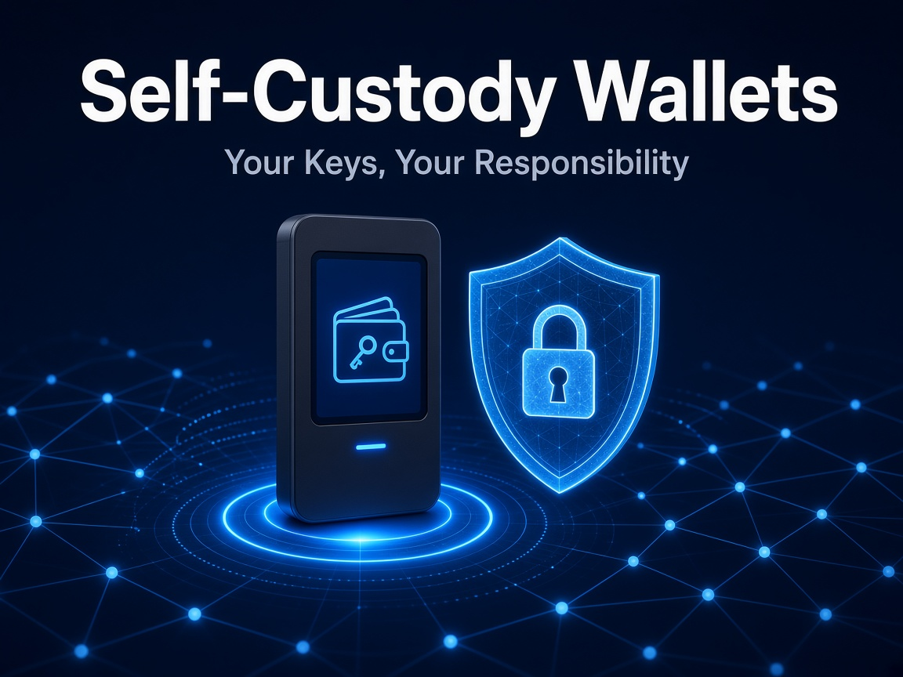

Crypto Security
Self-Custody Wallets Explained: Owning Your Keys Safely

When you hold crypto on an exchange, the exchange holds the private keys for you. With a self-custody wallet, you hold the keys yourself. That means full control, but also full responsibility: there is no "forgot password" button on a blockchain.
Why it matters more than ever
Chainalysis estimates about US$713 million was stolen from personal wallets in 2025, across roughly 158,000 incidents. Attackers are targeting more individuals, taking smaller amounts from each. (Source: Chainalysis)
Security habits that protect you
- Your seed phrase is the master key. Write it down offline and never type it into a website, chat or "support" form.
- Hardware wallets. They keep keys off internet-connected devices, which cuts the risk from malware and phishing.
- Check before you sign. Check every address and every approval. Many wallet drains come from a single malicious approval.
- Split your funds. Use a small "hot" wallet for daily use and a "cold" wallet for long-term holdings.
Not for everyone
Self-custody isn't for everyone. Lost keys usually mean lost funds, and mistakes can't be reversed. Many people use a mix of trusted exchanges and their own wallets.
Owning your keys is powerful, but security habits are what keep your crypto yours.
This article is for general information and education only. It is not financial, investment or legal advice.